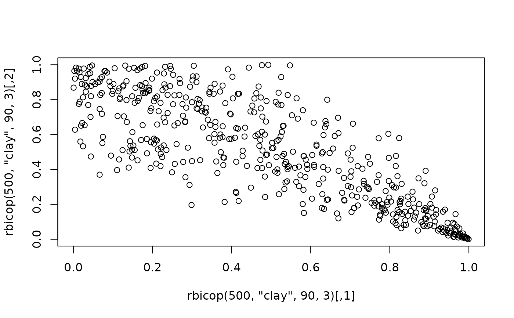

Density, distribution function, random generation and h-functions (with their inverses) for the bivariate copula distribution.
Usage
dbicop(
u,
family,
rotation,
parameters,
var_types = c("c", "c"),
log = FALSE,
deriv = NULL,
cores = 1
)
pbicop(u, family, rotation, parameters, var_types = c("c", "c"))
rbicop(n, family, rotation, parameters, qrng = FALSE)
# S3 method for class 'bicop_dist'
scores(u, vinecop, cores = 1, parameters = NULL, ...)
# S3 method for class 'bicop_dist'
hessian(u, vinecop, cores = 1, parameters = NULL, ...)
hbicop(
u,
cond_var,
family,
rotation,
parameters,
inverse = FALSE,
var_types = c("c", "c"),
deriv = NULL,
cores = 1
)Arguments
- u
evaluation points, a matrix with at least two columns, see Details.
- family
the copula family, a string containing the family name (see
bicopfor all possible families).- rotation
the rotation of the copula, one of
0,90,180,270.- parameters
a vector or matrix of copula parameters. For
scores()andhessian(), optional observation-specific parameters override those stored invinecop: a vector is accepted for one-parameter families; otherwise, use a matrix with one row per observation and one column per parameter. Parameters are not recycled.- var_types
variable types, a length 2 vector; e.g.,
c("c", "c")for both continuous (default), orc("c", "d")for first variable continuous and second discrete.- log
whether to return the log-density or a derivative of the log-density.
- deriv
NULLfor ordinary evaluation, or a character vector of length one or two specifying a first- or second-order partial derivative. Each component is one of"u1","u2", or"par<k>";"par"is an alias for"par1".- cores
number of cores used when evaluating observation-specific parameters.
- n
number of observations. If `length(n) > 1“, the length is taken to be the number required.
- qrng
if
TRUE, generates quasi-random numbers using the bivariate Generalized Halton sequence (defaultqrng = FALSE).- vinecop
- ...
unused.
- cond_var
either
1or2;cond_var = 1conditions on the first variable,cond_var = 2on the second.- inverse
whether to compute the h-function or its inverse.
Value
dbicop() gives the density or log-density, and pbicop() gives the
distribution function.
rbicop() generates random deviates, and hbicop() gives the h-functions
(and their inverses). If deriv is set, dbicop() and hbicop() return
the selected observation-wise derivative. scores() gives the
observation-wise score matrix and hessian() gives the average Hessian
matrix for a bicop_dist object.
The length of the result is determined by n for rbicop(), and
the number of rows in u for the other functions.
The numerical arguments other than n are recycled to the length of the
result.
For vectorized simulation, parameters must have one row per generated
observation and one column per family parameter.
Details
See bicop for the various implemented copula families.
The copula density is defined as joint density divided by marginal densities, irrespective of variable types.
H-functions (hbicop()) are conditional distributions derived
from a copula. If \(C(u, v) = P(U \le u, V \le v)\) is a copula, then
$$h_1(u, v) = P(V \le v | U = u) = \partial C(u, v) / \partial u,$$
$$h_2(u, v) = P(U \le u | V = v) = \partial C(u, v) / \partial v.$$
In other words, the H-function number refers to the conditioning variable.
When inverting H-functions, the inverse is then taken with respect to the
other variable, that is v when cond_var = 1 and u when cond_var = 2.
Derivatives
Setting deriv evaluates a selected first- or second-order derivative of
the density, log-density, or h-function. For example, deriv = "u1"
differentiates with respect to the first argument and
deriv = c("u1", "par2") evaluates the corresponding mixed second
derivative. Derivative order is immaterial. Parameter derivatives use the
natural parameters of the (possibly rotated) copula.
Derivatives are available only for continuous parametric copulas. The backend uses analytic formulas where available and finite-difference fallbacks where needed. Derivatives of inverse h-functions are not available.
Discrete variables
When at least one variable is discrete, more than two columns are required
for u: the first \(n \times 2\) block contains realizations of
\(F_{X_1}(x_1), F_{X_2}(x_2)\). The second \(n \times 2\) block contains
realizations of \(F_{X_1}(x_1^-), F_{X_2}(x_2^-)\). The minus indicates a
left-sided limit of the cdf. For, e.g., an integer-valued variable, it holds
\(F_{X_1}(x_1^-) = F_{X_1}(x_1 - 1)\). For continuous variables the left
limit and the cdf itself coincide. Respective columns can be omitted in the
second block.
Note
The functions can optionally be used with a bicop_dist object in place
of the family argument, e.g.,
dbicop(c(0.1, 0.5), bicop_dist("indep")) or
hbicop(c(0.1, 0.5), 2, bicop_dist("indep")).
Examples
## evaluate the copula density
dbicop(c(0.1, 0.2), "clay", 90, 3)
#> [1] 0.04843628
dbicop(c(0.1, 0.2), bicop_dist("clay", 90, 3))
#> [1] 0.04843628
## evaluate the copula cdf
pbicop(c(0.1, 0.2), "clay", 90, 3)
#> [1] 0.0001978703
## simulate data
plot(rbicop(500, "clay", 90, 3))

## h-functions
joe_cop <- bicop_dist("joe", 0, 3)
# h_1(0.1, 0.2)
hbicop(c(0.1, 0.2), 1, "bb8", 0, c(2, 0.5))
#> [1] 0.2436951
# h_2^{-1}(0.1, 0.2)
hbicop(c(0.1, 0.2), 2, joe_cop, inverse = TRUE)
#> [1] 0.05221261
## derivatives
dbicop(c(0.2, 0.4), joe_cop, deriv = "u1")
#> [1] 1.331389
dbicop(c(0.2, 0.4), joe_cop, log = TRUE, deriv = "par1")
#> [1] 0.03402268
hbicop(c(0.2, 0.4), 1, joe_cop, deriv = c("u1", "par1"))
#> [1] -0.2103228
## mixed discrete and continuous data
x <- cbind(rpois(10, 1), rnorm(10, 1))
u <- cbind(ppois(x[, 1], 1), pnorm(x[, 2]), ppois(x[, 1] - 1, 1))
pbicop(u, "clay", 90, 3, var_types = c("d", "c"))
#> [1] 0.726466873 0.001055373 0.502213354 0.180035017 0.716504356 0.253953372
#> [7] 0.621916144 0.565928213 0.510552135 0.306905371